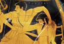
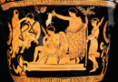

Orestes and Electra
Clytemnestra and Aegisthus, after the murder of Agamemnon, gain control of the throne of Mycenae (another switch in power that can be traced back to the original struggle of Atreus and Thyestes). However, Agaememnon’s son Orestes was away during the murder and, learning of his father’s fate, returns to Mycenae to take revenge. With the help of his sister Electra, he enters the palace and murders both Aegisthus and his own mother Clytemnestra (see image 1). The cycle of family revenge therefore continues, as does the complicated nature of bringing judgment on the justice of Orestes’ actions—matricide is a terrible prospect, but Orestes at the same time avenges the honour of his cuckolded father. In Aeschylus version of the myth, this question eventually comes before the law courts of Athens. Upon killing his mother Orestes is pursued by the Furies, who avenge parricide. Only he can see the grotesque divine beings, at which point he flees, first seeking purification at the temple of Apollo in Delphi (see image 2).In some versions of the myth, such purification does exculpate him from his guilt. Aeschylus’ version, in which the goddess Athena eventually grants absolution to Orestes by casting the final vote when the mortal Athenian jury is deadlocked, instead explores the role of the fifth-century Athenian courts in justice alongside divine punishment and absolution. Electra also becomes a major character in later fifth-century tragedy, with two plays written about her by the playwrights Sophocles and Euripides.
{kind=link}
{kind=link}